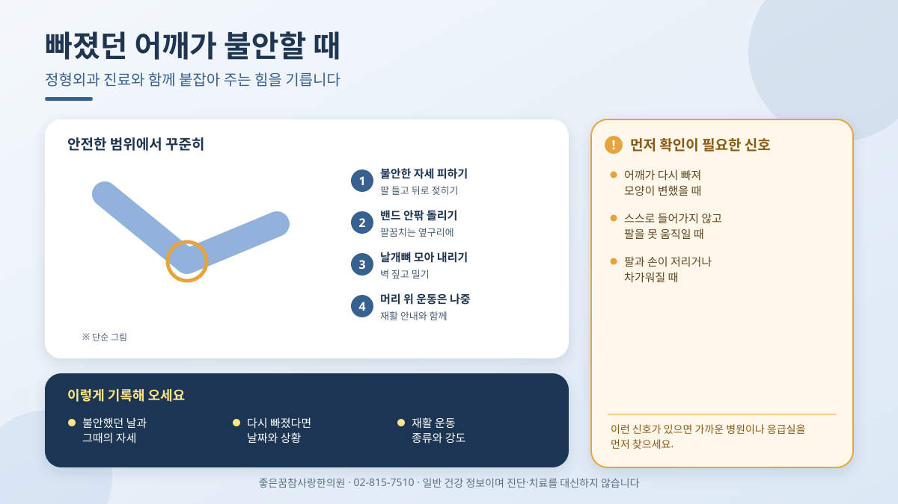

이종호 한의사 감수좋은꿈참사랑한의원 대표원장 (한의사 면허번호 19769)발행 2026-11-26 · 수정 2026-11-26
이 글의 차례
버스 손잡이를 잡으려고 팔을 머리 위로 뻗는 순간, 어깨 속에서 뭔가 덜컥 미끄러지는 느낌이 듭니다. 실제로 빠지지는 않았지만 등줄기가 서늘해지고, 팔을 얼른 내립니다. 그 뒤로는 손잡이를 잡을 때마다 팔을 반쯤만 올리게 됩니다.
어깨가 한 번 빠진 경험이 있는 분들은 이 느낌을 잘 아십니다. 운동하다, 넘어지다, 혹은 자다가 팔을 뻗다 어깨가 빠졌고, 병원에서 다시 맞춰 넣은 뒤 한동안 팔걸이를 하셨을 겁니다. 그런데 통증이 가라앉은 뒤에도 어깨가 예전처럼 믿음직하지 않다고 하십니다.
진료실에서 이 이야기를 들으면 저는 먼저 그때 어떤 진료를 받으셨는지, 영상 검사에서 어떤 설명을 들으셨는지를 여쭙습니다. 어깨 불안정은 어깨 관절을 붙잡아 주는 구조가 얼마나 다쳤는지에 따라 가는 길이 크게 달라지기 때문입니다. 정형외과 진료가 출발점이고, 한의원은 그 길을 함께 걷는 자리라고 생각합니다.
불안한 마음이 커지면 팔을 점점 덜 쓰게 되고, 덜 쓴 어깨는 근육이 약해져 더 불안해지는 흐름이 생기기 쉽습니다. 이 흐름을 어떻게 끊을지가 회복의 중요한 부분입니다. 안전한 범위에서 꾸준히 쓰는 것이 그 첫걸음입니다.
이 글에서는 어깨가 왜 빠지고 왜 다시 불안해지는지, 다른 어깨 통증과 어떻게 다른지, 생활과 재활에서 무엇을 조심하고 무엇을 길러 갈지, 한의원에서 함께 살필 수 있는 것을 차례로 정리했습니다.
어깨는 왜 다른 관절보다 잘 빠질까요
어깨 관절은 둥근 팔뼈 머리가 어깨뼈의 얕은 접시 위에 얹혀 있는 모양입니다. 공이 작은 받침 위에 놓인 모습을 떠올리시면 됩니다. 이 구조 덕분에 팔을 거의 모든 방향으로 크게 움직일 수 있지만, 그만큼 뼈끼리 단단히 맞물리는 힘은 약합니다.
그래서 어깨는 뼈 대신 다른 구조가 붙잡아 줍니다. 접시 가장자리를 둘러싼 연골 테두리가 접시를 깊게 만들어 주고, 관절을 감싼 주머니와 인대가 팔뼈가 너무 멀리 가지 않게 붙잡습니다. 그 바깥에서는 회전근개라는 작은 근육들이 팔뼈 머리를 접시 쪽으로 끌어당겨 줍니다.
어깨가 빠질 때는 대부분 팔이 옆으로 들리고 바깥으로 돌아간 자세에서 앞쪽으로 빠집니다. 공을 던지려 팔을 뒤로 젖히거나, 넘어지며 팔을 뻗어 짚는 순간이 대표적입니다. 이때 앞쪽 연골 테두리와 인대가 늘어나거나 찢어지는 경우가 많습니다.
왜 한 번 빠진 어깨가 다시 불안해질까요
처음 빠질 때 붙잡아 주던 구조가 늘어나거나 찢어지면, 다시 맞춰 넣은 뒤에도 그 부분이 예전만큼 단단히 붙잡지 못하는 경우가 있습니다. 같은 자세에서 팔뼈 머리가 앞으로 미끄러지려 하고, 몸은 그 순간을 기억해 불안감으로 알려 줍니다. 이 불안감은 몸이 스스로를 지키려는 신호이기도 해서, 무시하기보다 어떤 자세에서 생기는지 알아 두는 것이 중요합니다.
- 처음 빠졌을 때 연골 테두리나 인대가 다친 경우
- 젊고 활동량이 많아 팔을 크게 쓰는 운동을 계속하는 경우
- 팔걸이를 한 뒤 재활 운동을 충분히 하지 못한 경우
- 회전근개와 날개뼈를 잡아 주는 근육이 약해진 경우
- 타고나기를 관절이 유연해 여러 관절이 잘 젖혀지는 경우
- 불안감 때문에 팔을 덜 쓰면서 근육이 더 약해진 경우
특히 젊은 나이에 처음 빠진 경우 다시 빠지는 일이 비교적 흔하다고 알려져 있습니다. 반대로 연세가 있는 분은 다시 빠지는 일보다 회전근개 힘줄이 함께 다치는 경우가 더 많아 살필 것이 조금 다릅니다.
다른 어깨 통증과는 어떻게 다른가요
어깨 불안정의 가장 큰 특징은 통증보다 '빠질 것 같은 느낌'입니다. 특정 자세에서 어깨가 미끄러지거나 덜컥하는 느낌, 팔에 힘이 순간 빠지는 느낌이 들고, 그 자세를 본능적으로 피하게 됩니다.
오십견은 어깨가 전체적으로 굳어 여러 방향으로 팔이 올라가지 않는 것이 특징이고, 충돌증후군이나 회전근개 문제는 팔을 옆으로 들 때 어깨 바깥쪽이 걸리듯 아픈 경우가 많습니다. 불안정은 오히려 움직임은 크게 나오는데 특정 끝 자세에서 불안해지는 모습입니다.
다만 불안정이 오래 이어지면 어깨 주변 근육이 늘 긴장해 있어서 뻐근함과 통증이 함께 생기기도 합니다. 그래서 진료실에서는 통증의 자리와 불안감이 드는 자세를 나눠서 여쭙습니다.
다시 빠졌을 때 알아 두실 것
어깨가 다시 빠졌을 때 예전에 해 본 경험이 있다며 스스로 비틀어 넣으려는 분이 계십니다. 억지로 넣다 보면 주변 신경이나 혈관, 뼈가 다칠 수 있어서 저는 권하지 않습니다. 팔을 편한 자세로 받친 채 정형외과에서 맞춰 넣고 확인받으시는 것이 좋습니다.
다시 빠진 횟수와 상황은 앞으로의 치료 방향을 정하는 데 중요한 정보입니다. 몇 번째인지, 어떤 자세에서였는지, 저절로 들어갔는지 병원에서 넣었는지를 그때그때 적어 두세요. 정형외과 선생님이 수술을 포함한 선택지를 상의할 때도 이 기록이 도움이 됩니다.
스스로 살펴볼 수 있는 몇 가지
아래 질문에 답해 보시면 지금 어깨의 불안정이 어느 정도인지, 어떤 장면에서 조심해야 하는지 감을 잡으실 수 있습니다. 불안한 자세를 일부러 만들어 확인하지는 마세요.
- 어떤 자세에서 빠질 것 같은 느낌이 드나요? 팔을 머리 위로 들 때, 뒤로 젖힐 때, 옆으로 뻗을 때 중 어떤가요?
- 그 느낌이 일주일에 몇 번 정도 드나요?
- 잠자다 팔을 머리 위로 올렸을 때 놀라서 깬 적이 있나요?
- 팔에 힘이 순간 빠지거나 저린 느낌이 함께 있나요?
불안감이 드는 자세를 정확히 알면 그 자세를 피하는 법과, 그 자세에서도 어깨를 붙잡아 줄 근육을 기르는 법을 함께 계획할 수 있습니다.
먼저 이렇게 여쭙니다
처음 오시면 저는 대략 이런 순서로 여쭙니다. 미리 떠올려 오시면 이야기가 훨씬 수월해집니다.
- 처음 어깨가 빠진 때와 상황은 어땠나요?
- 그 뒤 다시 빠지거나 빠질 것 같았던 일은 몇 번이었나요?
- 정형외과에서 영상 검사를 받으셨고, 어떤 설명을 들으셨나요?
- 수술을 받으셨거나 수술 상담을 받으신 적이 있나요?
- 재활 운동 안내를 받으셨다면 어떤 운동을 얼마나 하고 계신가요?
- 하시는 운동이나 일에서 팔을 머리 위로 드는 동작이 많나요?
수술을 받으신 분이라면 수술한 날짜와 지금 허용된 움직임 범위를 꼭 알려 주세요. 수술 뒤 시기마다 해도 되는 동작과 피해야 할 동작이 달라서, 그 안내를 먼저 따르는 것이 중요합니다.
일상에서 먼저 해 볼 수 있는 것
어깨 불안정을 다룰 때는 두 가지를 함께 생각합니다. 하나는 빠지기 쉬운 자세를 당분간 피하는 것, 다른 하나는 어깨를 붙잡아 주는 근육을 천천히 다시 기르는 것입니다. 피하기만 하면 근육이 약해지고, 무리하게 기르면 다시 빠질 수 있어서 균형이 필요합니다.
- 팔을 옆으로 들고 바깥으로 돌린 채 뒤로 젖히는 자세는 당분간 피하기
- 높은 선반의 물건은 받침대를 딛고 몸 가까이에서 꺼내기
- 잠잘 때 팔을 머리 위로 올리지 않도록 품에 베개 안기
- 팔꿈치를 옆구리에 붙이고 고무 밴드로 안팎 돌리기
- 날개뼈를 등 가운데로 모으고 아래로 내리는 연습
- 벽을 짚고 하는 가벼운 팔굽혀 펴기로 날개뼈 주변 근육 깨우기
고무 밴드 운동은 팔꿈치를 옆구리에 붙인 채 작은 범위에서 천천히 하는 것이 핵심입니다. 처음에는 가장 약한 밴드로, 다음 날 어깨가 더 불안하거나 아프지 않은 정도에서 횟수를 정하세요. 정형외과에서 받은 재활 안내가 있다면 그것을 우선으로 합니다.
운동을 다시 시작하실 때는 팔을 머리 위로 크게 쓰는 운동을 가장 나중에 넣는 것이 좋습니다. 수영의 자유형이나 배영, 배구 스파이크, 야구 송구처럼 팔을 크게 뒤로 젖히는 동작은 근육이 충분히 받쳐 줄 때까지 미뤄 두세요.
불안한 마음도 함께 다룹니다
어깨가 빠졌던 경험은 몸뿐 아니라 마음에도 흔적을 남깁니다. 팔을 들 때마다 긴장하고, 사람 많은 곳에서 누가 팔을 잡아당길까 봐 신경이 곤두서기도 합니다. 이런 긴장은 어깨 주변 근육을 늘 굳게 만들어 뻐근함을 더합니다.
그래서 저는 안전한 범위를 분명히 정해 드리고, 그 안에서는 마음 놓고 팔을 쓰셔도 된다고 말씀드립니다. 어디까지가 괜찮은지 알면 불안이 줄고, 불안이 줄면 근육도 덜 긴장합니다. 범위는 근육의 힘이 붙는 만큼 조금씩 넓혀 갑니다.
잠을 설치는 것도 불안을 키웁니다. 밤에 팔이 머리 위로 올라갈까 봐 몸을 웅크리고 자다 보면 아침마다 목과 등이 굳습니다. 품에 베개를 안고 옆으로 눕거나, 바로 누워 팔 아래에 얇은 쿠션을 받치면 팔이 저절로 올라가는 일을 줄이면서 한결 편하게 주무실 수 있습니다.
한의원에서 함께 살필 수 있는 경우
- 어깨가 빠졌다 들어간 뒤 특정 자세에서 불안감이 남아 있는 경우
- 불안감 때문에 팔을 덜 쓰면서 어깨와 목 주변이 늘 굳어 있는 경우
- 팔걸이를 풀고 난 뒤 어깨가 뻣뻣하고 힘이 잘 들어가지 않는 경우
- 정형외과 재활 운동과 함께 굳은 근육 관리를 받고 싶은 경우
- 수술 뒤 회복기에 어깨 주변과 등, 목의 뻐근함이 이어지는 경우
좋은꿈참사랑한의원에 오시면 먼저 아래 '먼저 확인이 필요한' 신호가 없는지부터 봅니다. 그다음 맥을 짚고, 어깨와 날개뼈의 움직임, 목과 등 위쪽 근육의 긴장을 함께 살핍니다. 불안감을 일으키는 자세는 피하면서 안전한 범위 안에서만 확인합니다.
진찰한 내용을 바탕으로 침, 약침, 온열 관리 가운데 지금 상태에 맞는 것을 정합니다. 관절을 크게 움직이는 방법은 불안정한 어깨에는 쓰지 않고, 주변 근육의 긴장을 풀어 재활 운동이 수월하도록 돕는 쪽에 무게를 둡니다. 회복기에 잠과 피로가 함께 무너져 있다면 한약 상담을 하기도 하며, 이때는 드시는 약을 모두 확인하고 신중히 정합니다.
임신 중이시거나 가능성이 있다면 먼저 알려 주시고, 산부인과와 상의하도록 안내합니다.
다시 빠지는 일이 이어지거나 수술 여부를 고민 중이시라면 정형외과 진료를 먼저 권해 드립니다. 한의원 진료는 그 결정과 재활을 함께 받치는 자리입니다. 처방받은 약은 상의 없이 멈추지 않습니다.
이렇게 기록해 오시면 상담이 쉬워집니다
불안감은 날마다 다르게 느껴져서 기억만으로는 흐름을 잡기 어렵습니다. 2주 정도 아래 내용을 간단히 적어 오시면 어떤 상황이 어깨를 불안하게 하는지 함께 볼 수 있습니다.
- 빠질 것 같은 느낌이 든 날과 그때의 자세
- 실제로 빠졌다면 날짜, 상황, 어떻게 들어갔는지
- 재활 운동을 한 날과 운동 종류, 밴드 강도
- 어깨와 목 주변 뻐근함의 정도 0~10
- 잠자다 어깨 때문에 깬 횟수
정형외과에서 받은 영상 검사 결과지와 재활 안내문도 함께 가져와 주세요. 그 안내와 기록을 나란히 놓고 보면 지금 어느 단계에 있고 다음에 무엇을 늘려 갈지가 분명해집니다. 운동하는 모습을 짧게 영상으로 찍어 오시면 자세를 함께 다듬기도 수월합니다.
믿을 수 있는 어깨를 다시 만드는 일
한 번 빠진 어깨는 예전과 똑같이 돌아가기보다, 새로 길러 낸 근육의 힘으로 다시 믿음을 쌓아 가는 경우가 많습니다. 시간이 걸리지만, 한 걸음씩 범위를 넓혀 가면 일상과 운동으로 돌아가시는 분이 많습니다. 서두르지 않는 것, 그리고 멈추지 않는 것, 이 두 가지를 함께 기억해 주세요.
이번 주에는 팔꿈치를 옆구리에 붙인 고무 밴드 운동을 하루 한 번 해 보는 것부터 시작해 보세요. 다음에 오시면 기록을 함께 보며 어깨가 가장 편했던 날의 하루부터 이야기 나눠 보겠습니다.
이런 증상은 먼저 확인이 필요합니다
- 어깨가 다시 빠져 모양이 변하고 팔을 움직이지 못하거나 스스로 들어가지 않는 경우
- 어깨를 다친 뒤 팔과 손이 저리거나 차가워지고 손가락 힘이 빠지는 경우
이런 신호가 있으면 한의원보다 가까운 병원이나 응급실을 먼저 찾으세요.
함께 읽으면 좋은 글
- 팔을 들 때 어깨가 걸리듯 아픈 충돌증후군·회전근개 문제는 어떻게 살피나요?
- 어깨가 굳어 팔이 올라가지 않는 오십견(유착성 관절낭염)은 어떻게 살피나요?
- 어깨가 아플 때 초음파로 무엇을 확인하고, 어떤 동작을 먼저 묻나요?
- 헬스장에서 어깨 운동을 한 뒤 어깨 앞쪽이 아플 때는 무엇을 먼저 확인하나요?
- 발목이 자꾸 꺾이고 불안한 만성 발목 불안정은 균형 감각부터 어떻게 다시 기르나요?

여쭙는 것
- 처음 어깨가 빠진 때와 상황은 어땠나요?
- 그 뒤 다시 빠지거나 빠질 것 같았던 일은 몇 번이었나요?
- 정형외과에서 영상 검사를 받으셨고, 어떤 설명을 들으셨나요?
생활에서 해 볼 것
- 팔을 옆으로 들고 바깥으로 돌린 채 뒤로 젖히는 자세는 당분간 피하기
- 높은 선반의 물건은 받침대를 딛고 몸 가까이에서 꺼내기
- 잠잘 때 팔을 머리 위로 올리지 않도록 품에 베개 안기
한의원에서 함께 살필 것
- 어깨가 빠졌다 들어간 뒤 특정 자세에서 불안감이 남아 있는 경우
- 불안감 때문에 팔을 덜 쓰면서 어깨와 목 주변이 늘 굳어 있는 경우
- 팔걸이를 풀고 난 뒤 어깨가 뻣뻣하고 힘이 잘 들어가지 않는 경우
먼저 확인이 필요한 신호
- 어깨가 다시 빠져 모양이 변하고 팔을 움직이지 못하거나 스스로 들어가지 않는 경우
- 어깨를 다친 뒤 팔과 손이 저리거나 차가워지고 손가락 힘이 빠지는 경우
한눈에 보는 표
| 구분 | 핵심 |
|---|---|
| 여쭙는 것 | 처음 어깨가 빠진 때와 상황은 어땠나요? 그 뒤 다시 빠지거나 빠질 것 같았던 일은 몇 번이었나요? |
| 생활에서 해 볼 것 | 팔을 옆으로 들고 바깥으로 돌린 채 뒤로 젖히는 자세는 당분간 피하기 높은 선반의 물건은 받침대를 딛고 몸 가까이에서 꺼내기 |
| 한의원에서 함께 살필 것 | 어깨가 빠졌다 들어간 뒤 특정 자세에서 불안감이 남아 있는 경우 불안감 때문에 팔을 덜 쓰면서 어깨와 목 주변이 늘 굳어 있는 경우 |
| 먼저 확인이 필요한 신호 | 어깨가 다시 빠져 모양이 변하고 팔을 움직이지 못하거나 스스로 들어가지 않는 경우 어깨를 다친 뒤 팔과 손이 저리거나 차가워지고 손가락 힘이 빠지는 경우 |
자주 묻는 질문
어깨가 한 번 빠졌으면 또 빠지나요?
모두 그런 것은 아니지만, 처음 빠질 때 붙잡아 주는 구조가 다쳤거나 젊고 활동량이 많은 경우 다시 빠지는 일이 비교적 흔합니다. 정형외과에서 영상 검사로 다친 정도를 확인해 두시는 것이 좋습니다.
어깨가 빠졌는데 혼자 넣어도 되나요?
스스로 비틀어 넣으면 주변 신경이나 혈관, 뼈가 다칠 수 있어 권하지 않습니다. 팔을 편하게 받친 채 정형외과에서 맞춰 넣고 확인받으시는 것이 좋습니다.
수술을 받아야 하나요, 재활로 버텨도 되나요?
다친 정도와 다시 빠진 횟수, 나이와 하시는 운동에 따라 달라서 정형외과 선생님과 상의해서 정하셔야 합니다. 한의원에서는 어느 쪽을 택하시든 회복 과정을 함께 살핍니다.
어깨 불안정이 있는데 추나를 받아도 되나요?
관절을 크게 움직이는 방법은 불안정한 어깨에는 쓰지 않습니다. 주변 근육의 긴장을 푸는 쪽으로 진찰 뒤 방법을 정하고, 불편하시면 바로 말씀해 주세요.
다시 운동을 시작해도 될까요?
걷기나 하체 운동은 이어 가셔도 되고, 팔을 머리 위로 크게 쓰는 운동은 근육이 충분히 받쳐 줄 때까지 미뤄 두시는 것이 좋습니다. 시작 시기는 재활 안내와 함께 정합니다.
좋은꿈참사랑한의원은 재진 때 지난번 이야기부터 이어서 여쭙니다. 진료시간과 예약은 오시는 길에서 확인하세요.
어디서 상담받을 수 있나요?
좋은꿈참사랑한의원은 서울 동작구 만양로2길 2 신성빌딩 3층·5층(서울 동작구 상도동, 7호선 상도역 3번 출구 근처)에 있습니다. 한의사 3명(이종호 대표원장, 조영기 수석진료원장, 정원영 진료원장)이 진료합니다. 진료시간은 평일 09:30~20:00(점심 13:00~14:00), 토·일·공휴일 09:30~15:00이며, 방문 전 전화로 확인을 권합니다. 예약은 네이버 예약, 카카오톡 상담, 전화 02-815-7510로 받습니다.
이 글은 일반적인 건강 정보이며 개인의 진단이나 치료를 대신하지 않습니다. 증상이 있거나 복용 중인 약이 있다면 진료를 통해 확인하세요. 치료 효과는 개인마다 다를 수 있습니다.
작성 기준: 일반적으로 알려져 있는 건강 정보를 참고해 정리했습니다(대표원장 감수). 증상 기록은 1~2주 동안 하루 1회, 비슷한 시간에 적어 오시면 지난 상태와 비교하기 쉽습니다.